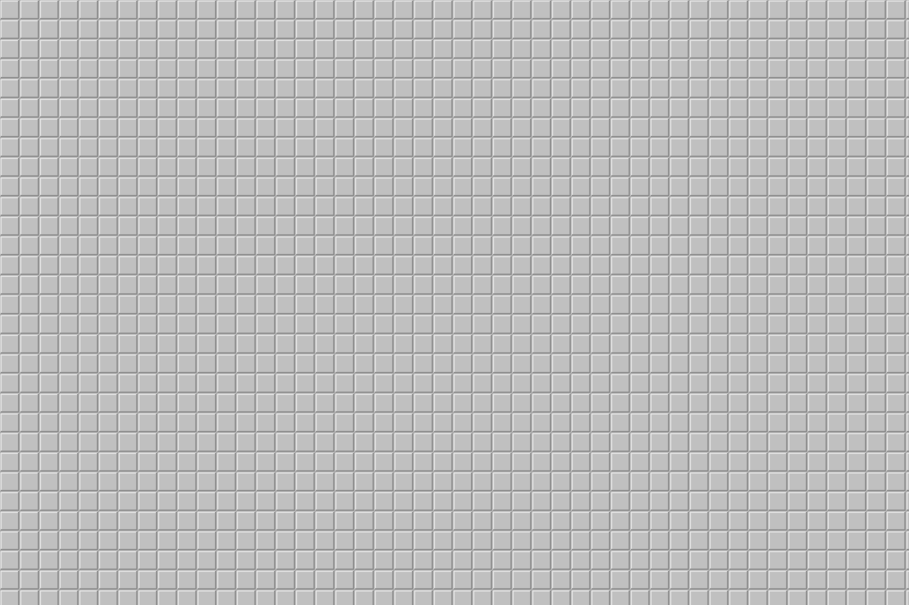

经典手感 100% 还原
左键翻开 · 右键三态（旗 → 问号 → 空）· 双击 / 中键 / 左右键同按 chord · 首点保证安全 · 计时从第一次翻开开始 · 失败时展示全部雷位。
在线试玩
下面这个网页版按和桌面版完全相同的规则实现：首点必定安全、右键三态、双击 chord、胜利自动插旗。 想验证手感是否一致，直接下载桌面版对比即可。
左键翻开第一格开始计时。
左键翻开 · 右键三态（旗 → 问号 → 空）· 双击已翻开的数字格 chord 批量展开 · 触屏长按插旗 · 首次点击保证安全
特性
经典玩法不是"差不多"，而是逐条对齐；新加的东西都建立在这套手感之上。
左键翻开 · 右键三态（旗 → 问号 → 空）· 双击 / 中键 / 左右键同按 chord · 首点保证安全 · 计时从第一次翻开开始 · 失败时展示全部雷位。
每关一张固定盘面，按通关用时评星（★★★ / ★★ / ★），逐关解锁；通关弹结算卡片，游戏内「◀ 上一关 / 下一关 ▶」可以连着打。
放大镜（透视 2×2，点中格为左上角）· 声呐扫描（只报 3×3 里有几颗雷）· 时间冻结（暂停倒计时 20 秒）；棋盘右上角「🛒 商店」用本局赚的金币当场换道具。
每扫出一颗雷得 1 金币；棋盘右上角「🛒 商店」随时打开，放大镜 30 / 声呐扫描 20 / 时间冻结 20。金币与买到的道具只在本局有效，每局（每关）从 0 开始。
开启后普通开局只发全程可纯逻辑推完的盘面：从首点开始每一步都有确定的推理，不用赌运气。默认关闭，超大或极密的盘会自动退回普通盘。
调色板由 19 个颜色键组成，内置经典 / 深色 / 高对比 / 纸质四套配色；还能只覆盖其中任意一个颜色。
界面与全部文案支持简体中文 / English 实时切换（含 Windows 通知与两个「关于」窗口），首次安装默认简体中文，切换立即生效、不需要重启。
跟随系统 / 浅色 / 深色三种界面颜色，切换即时生效并会被记住。深色下会自动保证棋盘与窗口背景分得开（按亮度差微调棋盘底色，高对比主题同样适用）。
合计 1000 点，分累计 / 速度 / 关卡 / 道具 / 挑战五类；底部「🏆 成就」随时查看进度。
自动检查频率可设（每次启动 / 每天 / 每周…），也可以暂停到指定日期；升级后首次打开自动展示「本版新增」，设置里随时回看。
翻开 / 插旗 / chord / 踩雷 / 胜利 / 启动共 6 个音效，全部由代码实时合成 WAV，工程里没有一个音频文件。
自绘棋盘提供完整的 UI Automation 支持，屏幕阅读器可以逐格朗读"第 3 行第 5 列，已翻开，数字 2"。
关卡模式
关卡 = 一张固定的盘面 + 一个目标。每关写死一个随机种子并用锁定盘面创建，所以同一关永远是同一张盘—— 这是能重试、能刷星、能分享的前提。
| 章 | 盘面 | 雷数 | ★★ 门槛 | ★★★ 门槛 |
|---|---|---|---|---|
| 第 1 章 入门 | 9×9 | 10 → 20 | 90s → 160s | 50s → 90s |
| 第 2 章 进阶 | 16×16 | 30 → 55 | 240s → 420s | 140s → 240s |
| 第 3 章 高手 | 30×16 | 70 → 120 | 480s → 900s | 280s → 540s |
| 第 4 章 专家 | 30×16 | 130 → 180 | 900s → 1200s | 600s → 800s |
| 第 5 章 大师 | 30×18 | 150 → 225 | 1120s → 1520s | 750s → 1010s |
| 第 6 章 宗师 | 32×20 | 190 → 290 | 1560s → 1960s | 1040s → 1310s |
道具
第一次进游戏每种各送 2 个；之后每扫出一颗雷得 1 金币，在棋盘右上角「🛒 商店」里当场换（放大镜 30 / 声呐 20 / 冻结 20）。金币与买到的道具都只在本局有效，退出即清空。
透视以目标格为左上角的 2×2 区域，把雷的位置直接标出来（贴近边缘时按棋盘裁切）。
只告诉你选中的 3×3 区域里有几颗雷，不告诉你位置。
倒计时暂停 20 秒，用来救一次"想太久了"。
渲染与性能
棋盘是纯矢量自绘。瓶颈原本是绘制调用次数而不是像素，所以远景把同色连续格合并成一条矩形、 再把结构相同的连续行合并成竖直色带——100 万次调用塌缩成个位数～几十次。

技术
主题是纯调色板矢量自绘，音效由代码实时合成，图标是自绘的多尺寸 ICO—— 这不只是洁癖，它直接回应了版权红线：本工程不含任何来自 Windows 7 扫雷的素材。
MineSweeper.Core 是纯 .NET 类库，零 UI 依赖，所有游戏规则都在这里；MineSweeper.App 只负责显示与输入。
铁律："这段逻辑能不能不启动 UI 就测出来？" 能测就该放 Core。
关卡表的守门人、布雷与参数边界、1000×1000 全空盘不栈溢出、原子写盘与损坏降级、波形互不相同……全部可无 UI 回归，约 1 秒跑完。
设置、进度、记录、关卡进度、历史各自独立；损坏留备份重建，版本过新则拒读且不覆盖原文件。删掉数据目录即全部重置。
下载
两种安装方式，内容完全一样。包是自包含的——不需要预装 .NET 或 Windows App SDK。
最省事：商店签名、无需信任任何证书，后续自动更新。
已上架，商店负责签名与后续更新。
立即可用。下载 .msix 与随包的 .cer 证书，先信任证书再双击安装。
也可以用 build.cmd 自己从源码编译。
| 项 | 要求 |
|---|---|
| 系统 | Windows 10 1809（17763）及以上 / Windows 11 |
| 架构 | x64（ARM64 设备通过 Windows 11 的 x64 模拟运行） |
| .NET 运行时 | 不需要——包内已包含 |
| Windows App SDK | 不需要——包内已包含 |
| 磁盘占用 | 约 230 MB（自包含运行时占大部分；安装包本身 93 MB） |
Import-Certificate -FilePath .\MineSweeper2.0-dev.cer -CertStoreLocation Cert:\LocalMachine\TrustedPeople
常见问题
这是刻意的设计——项目所有者的要求是纯鼠标操作，所以棋盘不是键盘焦点、也没有焦点框。设置面板里的文本框（种子、分享串）仍然可以用键盘输入。方向键 / 回车 / 空格都不会对棋盘产生作用，这不是故障。
未打包版在 %LOCALAPPDATA%\MineSweeper2\，商店版在应用自己的本地数据文件夹里。里面有 settings.json（设置）、progress.json（进度与道具）、levelprogress.json（关卡）、records.json（最快记录）、history.json（累计统计）、config.json（可手改的配置）与 app.log（日志）。删掉这个目录就等于一切从头开始。
GitHub Release 版用的是自签名证书，需要先把随包的 .cer 装进「受信任人」证书存储（见上面的命令）。Microsoft Store 版由商店签名，不会出现这个提示。
不会。程序唯一的联网行为是检查更新：只在检查时访问 GitHub 公开接口（只读版本号，不发送任何个人信息），可在设置里关闭；Microsoft Store 版完全不检查（由商店负责更新）。没有账号、没有遥测、没有广告；所有存档只写在本机，卸载即删除。详见隐私政策。
可以。设置面板能自定义盘面宽度 / 高度 / 雷数（上限 4096×4096）；道具上限、放大镜宽高、商店价格、冻结秒数等写在 config.json 里，改完不用重新编译。关卡数值集中在 Core/Levels/LevelTable.cs 一张表里。